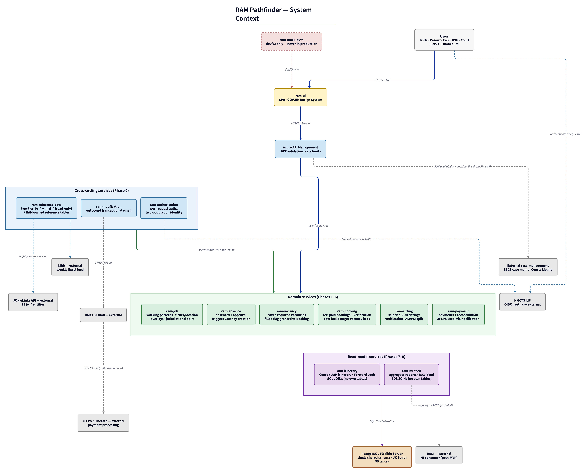

Architecture Decision Document
architecture.md is the architectural index. Implementation-detail content (code-tree inventories, gap and assumption registers, the per-service convention catalogue, per-table inventory, sequence diagrams, changelog history) lives in sibling files under ./architecture/ and is referenced from this file in place. Read this file for the what and why; follow links into the siblings for the how.
Contents
- System context — at a glance
- How this document is structured
- Project Context Analysis
- Starter Template Evaluation
- Core Architectural Decisions
- Implementation Patterns & Consistency Rules
- Project Structure & Boundaries
- Repository Strategy & List
- Complete Project Directory Structures
- Architectural Boundaries
- Requirements to Structure Mapping
- Cross-Cutting Concerns to File Locations
- Integration Points — Internal
- Integration Points — External
- Data Flow — Canonical Operational Cycle
- File Organisation, Development Workflow, Deployment Pipeline
- Wave rollout flow (Phase 9+)
- Architecture Validation Results
- External References
- Changelog
System context — at a glance

High-level service map. For detail, see the relevant section in this document or its siblings.
How this document is structured
| Sibling file | Contents |
|---|---|
./architecture/starter-template.md |
HMCTS Crime SpringBoot starter — initialisation flow, Gradle build tool rationale, dependency inventory, per-service RAM Pathfinder conventions overlaid by the scaffolding script |
./architecture/data-tables.md |
Authoritative Table Ownership Mapping — RAM Pathfinder tables grouped by owning service, including the two-tier reference-data ownership model (upstream-sourced jo_* / mrd_* tables + RAM-owned tables) |
./architecture/conventions.md |
Implementation Patterns & Consistency Rules — naming, structure, format, communication, process, enforcement |
./architecture/repo-structure.md |
Per-service / UI / ram-architecture directory structures, file organisation, deployment pipeline |
./architecture/repository-strategy.md |
Polyrepo strategy + the 15-repo list (per-service purpose and key functions) |
./architecture/functional-requirements-coverage.md |
All 60 FRs listed by capability area, with architectural support per group |
./architecture/non-functional-requirements-coverage.md |
All 42 NFRs listed by category, with architectural support per group |
./architecture/sequence-diagrams/ |
Mermaid sequence diagrams: user-initiated absence-to-reconciliation flow; scheduled payment-batch flow |
./architecture/gaps.md |
Documented Gaps register — G1–G9 series with mitigations and owners |
./architecture/assumptions.md |
Assumptions register — A1–A37 with type and verification path |
./architecture/changelog.md |
Version history v1.0 → v2.6 with pre-v1.8 anchor → current location redirect table |
Refactor history: the single-file architecture.md was split into the index + sibling structure above in v1.8 (Strategy B).
Project Context Analysis
Requirements Overview
Functional Requirements (60, in 9 capability areas — renumbered 2026-06-10: the Phase 0 ETL FR was retracted and FR58–FR61 became FR57–FR60). RAM Pathfinder is 11 services (revised v2.2 — ram-configuration dropped; per-service config in Spring profiles + Key Vault; a shared ram_configuration_values table holds cross-service policy values), in three clusters:
- Domain services — JOH, Absence, Vacancy, Booking, Sitting, Payment. Operational chain: Manage JOHs → Absence → Vacancy → Booking → Sitting → Payment → Reconciliation. (JOH — Judicial Office Holder — is the umbrella term1; the service is
ram-joh.) - Cross-cutting services — Reference Data (facade over a two-tier datastore: upstream-sourced JOH eLinks + MRD tables, read-only in RAM, plus RAM-owned tables — revised D3/FR6), Authorisation (gates every call; carries roles + jurisdiction + Region/Area scope2/FR2), Notification (transactional email).
- Read-model services — Itinerary, MI Feed. Both use SQL JOINs over the shared database.
Architectural implications:
- One synchronous cross-service write:
POST /bookingsmarks the linked vacancy as filled in the same transaction (FR30, R5) per Principle 1. Retry safety uses native DB primitives — see Data Architecture. - Read-model federation: SQL JOINs over the shared schema. Indexed joins meet the Forward Look NFR (≤ 30 s p95, NFR8).
- Working-pattern sitting generation (FR13, FR35): owned by JOH; produces records that Sitting manages from Phase 5 onwards.
- Versioned content-type for Payment (FR44 —
application/vnd.hmcts.jfeps+jsonvs+xlsx). JFEPS shape is externally owned; preserved for SSCS wave 13. - Per-service authorisation (FR2, NFR13): every API call resolves principal → roles + jurisdiction + Region/Area scope through Authorisation. Implemented as middleware.
- Upstream reference-data ingestion (revised D3, NFR24):
ram-reference-dataingests the 15jo_*entities from the JOH eLinks API (in-process scheduled sync) and MRD supplementary data from a weekly Excel feed (blob drop + scheduled pick-up). Tier-(a) tables are never hand-edited in RAM; corrections happen at source.
Non-Functional Requirements (42, in 8 categories):
- Performance — page-level: ≤ 5 s dashboard, ≤ 30 s reports/Forward Look (APEX baseline). API: ≤ 500 ms p95 read, ≤ 1 s p95 write. Capacity ~50–100/region; ~200–500 national.
- Security — TLS only; encryption at rest; AuthN via HMCTS IdP SSO; AuthZ owned by RAM Pathfinder; no bank details, no case-level data; aligned with GFS-7.
- Accessibility — WCAG 2.2 AA; tested per UI page per phase.
- Integration — OIDC issuer (mock auth Phase 0–8; HMCTS IdP from pre-Phase-9); JFEPS/Liberata unchanged (preserved for SSCS wave 1); HMCTS email; DA&I MI Feed; JOH eLinks API + MRD weekly Excel feed are MVP integrations (NFR24 reframed 2026-06-104 — was "no eLinks integration in MVP").
- Observability — log-based MVP only5; structured logs + correlation IDs; OpenTelemetry → Application Insights.
- Data privacy & sovereignty — Azure UK regions only; UK GDPR + DPA 2018; no case-level data.
- Reliability — available during HMCTS hours; per-wave rollback; single Azure region (UK South) with multi-AZ HA; rollout isolation at the app tier via per-(jurisdiction, region) activation flags (FR57). DR is an open gap — see
./architecture/gaps.mdG3.6. - Maintainability — API-as-Product (versioned, OpenAPI, RFC 9457 problem-details); per-service deployment; manual UAT scripts per domain service (FR60 / NFR41); Postman collections per phase.
Scale & complexity: 11-service API backend + UI. Complexity drivers: JFEPS/Liberata payment integration, JOH eLinks + MRD upstream ingestion, cross-cutting jurisdiction-aware authorisation, jurisdiction-first phased rollout, judicial regulatory environment, manual UAT against the jurisdiction's incumbent system (GAPS for SSCS wave 1; APEX for Courts waves 2+).
Technical Constraints & Dependencies
Locked from PRD:
- Stack: Java 25 (LTS) + Spring Boot 4 + Kubernetes + Microsoft Azure (UK regions only).
- Coordination: REST-first synchronous; no event stream, no message bus, no webhook fabric.
- Read-model strategy: SQL JOINs over the shared schema; no API federation, no cache fallback.
- Identity: OIDC issuer (mock auth Phase 0–8; HMCTS IdP from pre-Phase-9 cutover); RAM Pathfinder owns Authorisation; password/session/account lifecycle external. Two distinct user populations6: JOHs (IdP email →
jo_people→ personnel number) and HMCTS admin staff (RAM-internal staff identity table). - Data residency: Azure UK regions only (no personal data leaves the UK).
- No bank details, no case-level data anywhere by contract.
- JOH eLinks API + MRD are MVP integrations (NFR24 reframed7); other HR systems remain out of MVP scope.
- RAM scope boundary8: system of record for JOH availability and scheduling only — case management, panel composition, and hearing types live in external systems that consume RAM's APIs; no external system writes into RAM.
External systems (not controlled by RAM Pathfinder):
- HMCTS IdP — pre-Phase-9 hard dependency; mock auth covers Phase 0–8.
- JOH eLinks API — canonical upstream source for the 15
jo_*judicial-holder entities9. Pulled byram-reference-data's scheduled sync; read-only in RAM; corrections at source (Judicial Office). No data flows upstream from RAM. - MRD (Master Reference Data) — supplementary judicial reference data (notably JOH Specialisations). Weekly Excel feed for MVP (public MRD APIs not yet available); transitions to API integration when MRD APIs ship.
- JFEPS-compatible Excel format for Payment — externally owned; treated as a versioned content-type. Preserved for SSCS wave 110.
- HMCTS email infrastructure for transactional notifications.
- DA&I MI Feed consumers (post-MVP) — they call RAM Pathfinder APIs.
- External case-management systems (SSCS case management; Courts Listing systems) — consume RAM's APIs from Phase 9 onward11; never write into RAM.
- GAPS / APEX (incumbents) — used by UAT users to compare behaviour per wave (GAPS for SSCS wave 1; APEX for Courts waves 2+). No programmatic linkage to RAM Pathfinder's CI or runtime.
Data bootstrap (no legacy migration — revised D3 + D9): RAM Pathfinder migrates nothing from GAPS or APEX. Judicial-holder reference data is ingested from JOH eLinks + MRD (source-of-truth integration, not migration); historical data stays in the cohort's incumbent system. User and authorisation records (auth_* tables) are bootstrapped by programme-management / operational mechanisms outside the PRD's scope; every bootstrapped user must resolve to an IdP principal before that user's wave cutover. The Phase 0 Data Migration ETL is retracted; ram-architecture/migration/ is no longer a deliverable.
Cross-Cutting Concerns Identified
Concerns that recur across most services and are addressed at the platform layer:
- Authorisation enforcement — every API call resolves principal → roles + jurisdiction + Region/Area scope through Authorisation (FR2, FR3). Implemented as middleware. Jurisdiction is a first-class hierarchical attribute12 sourced from
jo_jurisdictions. - Reference Data is single-owner, two-tier —
ram-reference-dataowns every reference-data table in the shared schema (FR7). Tier (a) upstream-sourced (jo_*from JOH eLinks;mrd_*from MRD): read-only in RAM, refreshed by the ingestion mechanisms, corrections at source. Tier (b) RAM-owned (regions, offices, calendar, operational vocabularies): maintained in RAM — DBAs via SQL in MVP13, admin UI post-MVP. Separate tables preserve lineage (FR6). Reads: direct SQL on the reference-data tables (no caching per Principle 2). Reference-data API responses are jurisdiction-filtered14. - Per-jurisdiction + Region/Area scoping — domain operations default-scope by jurisdiction and Region/Area from the Authorisation context (FR2, FR49). Cross-region operations are explicit.
- Per-(jurisdiction, region) phased activation1516 — RAM Pathfinder access is gated by
ram_auth_user_activation_flags(FR57); the flag rows carry the (jurisdiction, region) tuple so cutover flips include both in theWHEREclause. Authorisation distinguishes "active in RAM Pathfinder" from "exists in RAM Pathfinder". - Retry safety via native DB primitives — natural-key uniqueness, optimistic locking, pessimistic row locking. No custom idempotency-key tables. Detail in Data Architecture and
./architecture/data-tables.md. - API-as-Product compliance — versioned contract, RFC 9457 problem-details, OpenAPI per service (FR58).
- Manual UAT (FR60 / NFR41) — jurisdiction-incumbent-experienced users compare RAM Pathfinder vs the incumbent per service per wave (GAPS-experienced users for SSCS wave 1; APEX-experienced users for Courts waves 2+); sign-off is the wave-cutover gate. No automated incumbent-comparison in CI.
- Forbidden data — no bank details (FR47); no case-level data (FR54). Enforced at the schema and API boundary.
Architecture-phase decisions still open
The PRD lists 12 TBDs. 5 are programme-management decisions (capacity, ops hours, pilot region, cross-region wave handling, migration owners) — tracked in the PRD risk register, not here. The 7 architecture-phase decisions resolved here:
| # | TBD | Step where resolved |
|---|---|---|
| 1 | Rate limit policy | Step 4 (API & Communication) |
| 2 | UI framework family | Step 4 (Frontend Architecture) |
| 3 | Service-to-service authentication mechanism | Step 4 (Authentication & Security) |
| 4 | Log retention period | Step 4 (Infrastructure & Deployment) |
| 5 | API versioning specifics | Step 4 (API & Communication) |
| 6 | Historical-data access policy | Step 4 (Infrastructure & Deployment) |
| 7 | APEX ⇄ IdP identity-key scheme (reframed 2026-06-11 — identity resolution at sign-in17) | Step 4 (Authentication & Security) |
Architecture-phase decisions deferred to architecture by the PRD (SCP 2026-06-10), now resolved:
| # | Decision deferred to architecture by the PRD | Resolution |
|---|---|---|
| 8 | ram-judge → ram-joh rename18 |
Full rename — service, repo, DB role (ram_joh), and table names. Nothing is built yet, so the rename costs nothing now versus a guaranteed costlier rename after Phase 1. |
| 9 | JOH eLinks sync mechanism19 | In-process scheduled sync — a @Scheduled task inside ram-reference-data pulls the JOH eLinks API nightly and full-refresh-upserts the jo_* tables. No new service principal, no new deployable. Detail in Data Architecture. |
| 10 | MRD Excel ingestion mechanism20 | Blob drop + scheduled pick-up — the weekly Excel lands in an Azure Blob container; a @Scheduled task in ram-reference-data polls, validates, and upserts the mrd_* tables. Detail in Data Architecture. |
| 11 | Admin-staff canonical identifier21 | RAM-assigned UUID on ram_auth_staff_identities, with IdP email as the lookup key — mirroring the JOH email → personnel-number pattern. Detail in Authentication & Security. |
Starter Template Evaluation
Foundational Principles
Principle 1: API for Workflows, Shared Database for Simple Data Access
APIs are the boundary for workflows. The shared database is the integration mechanism for simple cross-service reads and writes.
- Workflows go via API — multi-step operations with business rules, state transitions, or orchestration (Booking creation, Payment processing, Absence approval).
- Single-field cross-service updates can be direct DB writes — e.g. Booking marks its linked vacancy as filled; Payment updates the booking's payment lifecycle status. Each owning service grants which tables/columns other services may write via explicit DB role grants (see Data Architecture).
- Cross-service reads are direct SQL JOINs — Itinerary, MI Feed, and Reference Data reads query the shared schema directly. No API fan-out, no cache.
The database is one global PostgreSQL instance with a single shared schema. Cross-service access is gated by per-service DB roles with explicit grants. Table ownership is encoded in the table name — every RAM-owned table carries the ram_ prefix; upstream-sourced tier-(a) tables carry their source-system prefix (jo_, mrd_) — and enforced by ArchUnit fitness functions in CI.
Why one schema, not schema-per-service: 11 services, one team, one domain. Schema-per-service costs 11 schemas + grants + cross-schema FK overhead + per-PR coordination, with no concrete benefit at MVP. One schema supports the same DB-level access control via per-service roles.
Why per-service DB roles, not one shared role: per-service roles are the seam for any future schema-per-service or service extraction. ~10 minutes/role on Day 1; expensive to retrofit. They also give defense-in-depth (a Sitting repo can't write to Payment tables — DB rejects), DB-layer signal for the post-MVP user-action audit22, and a reversible decision (start broad, tighten as patterns become visible).
No shared runtime code library. Each service owns its own cross-cutting concerns, even at the cost of boilerplate. Changing a cross-cutting concern in one service never forces redeployment of any other (NFR40).
What is shared:
- The PostgreSQL database (one instance, one schema, per-service roles with explicit grants).
- API contracts — OpenAPI specs, RFC 9457 envelope, content-type negotiation. Specification, not runtime code.
- API spec Maven artefacts —
uk.gov.hmcts.ram:api-ram-{service}:{version}. Contract, not runtime code. - Runtime infrastructure services (Authorisation, Reference Data, Notification) — by API call (workflows) or direct DB read (simple lookups).
- Scaffolding templates (HMCTS Crime SpringBoot template) — at scaffold time, then forked.
- CI/CD and operational conventions (Gradle idioms, OpenTelemetry → Application Insights ingestion contract, Flyway baseline) — by convention and tooling, not library.
Duplicated per service: custom JWTFilter; @ControllerAdvice (RFC 9457 + retry-safety status mapping); structured-logging config. ~300–500 lines per service × 11 services. The HMCTS starter encodes most of it.
Principle 2: No Premature Optimisation
Performance optimisations are added when measurement justifies them. At MVP:
- No Reference Data cache — direct SELECT from the Reference Data tables (both tiers).
- No distributed cache (Redis).
- No service mesh (Istio/Linkerd) — Spring Security + AKS DNS + JWTFilter are sufficient.
- No read replicas — one PostgreSQL instance is adequate at this scale.
- No async messaging — REST-first synchronous is the default.
Each is added only when measurement shows a need.
Primary Technology Domain
API backend: Java + Spring Boot 4 on AKS in Azure UK regions. 11 independently-deployable Spring Boot services, each scaffolded once from the HMCTS starter and owned independently. UI framework is a separate decision (Step 4 Frontend Architecture).
Starter Options & Selection
| Option | Verdict |
|---|---|
HMCTS internal Java/Spring Boot starter (hmcts/service-hmcts-crime-springboot-template) |
✅ Selected. Confirmed via review (2026-05-06). Encodes Logstash JSON logging, health checks, OpenTelemetry → App Insights, IdP integration patterns (custom JWTFilter), and security defaults. Helm chart and Spring Cloud Azure Key Vault are not in the template baseline — RAM Pathfinder scaffolding script adds them (G1.4a, G1.4b). |
| Spring Initializr | Fallback only. Same per-service-fork model; HMCTS-specific patterns added manually. |
| JHipster | ❌ Rejected. Heavyweight; bundles identity/frontend/database/Docker conflicting with locked decisions. |
| Spring Cloud Microservices archetype | ❌ Rejected. Service discovery / config server / circuit breakers — not needed under REST-first synchronous + Kubernetes. |
| Custom RAM Pathfinder Platform Library | ❌ Rejected on the no-shared-runtime-library principle. |
Why the HMCTS starter: scaffold-time inheritance, not runtime dependency. Each service is forked at scaffold time and owns its own copy from then on. Consistent with the foundational principles.
Initialisation Flow, Build Tool, Dependency Inventory, Per-service Conventions
Core Architectural Decisions
Decision Priority Analysis
Critical (block implementation): Database technology + table-ownership/per-service-role model · Service-to-service authentication mechanism · API versioning · UI framework · API gateway / rate-limiting layer.
Important (shape architecture): Migration tooling for schema changes · APEX ⇄ IdP identity-key scheme · Log retention · Historical-data access policy · HA topology (single Azure region multi-AZ in UK South; HMCTS-judicial-region rollout isolation at application tier). DR scope is an open gap — see ./architecture/gaps.md G3.6.
Deferred (post-MVP per Principle 2): Reference Data caching · Distributed cache (Redis) · Service mesh · Read replicas · APIM advanced features.
Data Architecture
Database: PostgreSQL on Azure Database for PostgreSQL Flexible Server, UK regions only. Version 17 (16 acceptable if HMCTS prefers). Reasons: relational domain; mature; lower-cost than Azure SQL; HMCTS open-source preference.
Topology: one global instance, one shared schema, per-service DB roles.
- One PostgreSQL Flexible Server instance (not per-region, not per-service); sized for the full user population.
- One logical database, one shared schema (e.g.
ram). - Table ownership encoded by table name (below) + per-service DB roles with explicit grants (below).
Table naming and ownership (revised 2026-06-11 — ownership is in the prefix):
- RAM-owned tables —
ram_prefix, entity-plural:ram_absences,ram_vacancies,ram_bookings,ram_sittings,ram_payments,ram_payment_schedules,ram_regions,ram_offices,ram_calendar_periods, plus the RAM-owned vocabulary tables. The prefix makes RAM ownership visible at a glance against the upstream-sourced tables. No_overlayssuffix pattern — JOH operational state over upstream entities is named directly (ram_joh_ticket,ram_joh_location). - Upstream-sourced tables — source-system-prefixed:
jo_*(15 JOH eLinks entities, e.g.jo_people,jo_jurisdictions,jo_tickets) andmrd_*(MRD entities). The prefix marks tier-(a) lineage: read-only in RAM, written exclusively by the ingestion mechanisms (FR6/FR7). - Service-internal or ambiguous tables — service-prefixed:
ram_payment_reconciliations,ram_notification_dispatches,ram_auth_user_roles. - JOH operational-state tables — owned by
ram-joh, keyed bypersonnel_number(the canonical JOH identifier fromjo_people):ram_working_patterns,ram_joh_ticket,ram_joh_location,ram_jurisdictional_splits. - Ownership table in
./architecture/data-tables.md. - The team that writes the Flyway migration creating the table owns it. The
V*__*.sqllives in the owning service's repo.
ArchUnit fitness functions in CI:
- No two services' migrations create overlapping tables.
- DB role grants match the documented ownership.
- Each service's role has full privileges on its own tables, and only explicitly-granted privileges on others.
Cross-service access:
| Access pattern | Allowed | Mechanism |
|---|---|---|
| Service reads its own tables | ✅ Always | Spring Data JPA |
| Service writes its own tables | ✅ Always | Spring Data JPA |
| Service reads another service's tables | ✅ For SELECT-granted | Direct SQL JOIN; no API roundtrip |
| Service writes a single field on another service's table | ✅ For UPDATE-granted columns | Direct UPDATE in writer's transaction; pessimistic row lock recommended |
| Service performs a workflow on another service's data | ❌ Direct DB; ✅ via API | Owning service's REST endpoint |
| Service writes non-granted columns/tables | ❌ Forbidden | DB rejects |
Foreign keys within the shared schema are allowed and encouraged (e.g. bookings.personnel_number REFERENCES jo_people(personnel_number)). Domain tables reference JOHs by personnel_number — the canonical JOH identifier23. The eLinks sync never hard-deletes jo_people rows (departures are marked inactive), so FK targets are stable.
Per-service DB roles with explicit grants — ram_joh, ram_booking, etc. (one per service; ram_mock_auth for dev/integration). ALL privileges on owned tables. Cross-table access granted explicitly: GRANT SELECT ON ram_vacancies TO ram_booking; GRANT UPDATE (filled, filled_at) ON ram_vacancies TO ram_booking;. Grants live in Flyway migrations owned by the table-owning service. Day 1: grants start broad, tighten as patterns become visible. Tier-(a) tables (jo_*, mrd_*) are INSERT/UPDATE-able by ram_reference_data only (the ingestion writer); every other role gets at most SELECT — the DB enforces "read-only in RAM".
Forward compatibility: per-service DB roles are the seam for future schema-per-service or service-extraction without connection-layer code changes.
Data modelling: Spring Data JPA + Hibernate. Per-service entities, repositories, and queries. No shared entity classes. Another service's whitelisted tables are @Immutable JPA entities in the consuming service.
Schema evolution: Flyway (spring-boot-starter-flyway, flyway-core, flyway-database-postgresql). Per-service src/main/resources/db/migration/V*__*.sql. Migrations run on application startup. Flyway is for RAM Pathfinder's DDL only — not for loading upstream data (see Upstream reference-data ingestion below).
Two-tier reference-data ownership (revised D3 + FR6/FR7, 2026-06-10):
| Tier | Tables | Written by | Corrections |
|---|---|---|---|
| (a) Upstream-sourced | jo_* (15 JOH eLinks entities) + mrd_* (MRD entities) |
The ingestion mechanisms only (ram_reference_data role) — never hand-edited in RAM |
At source: Judicial Office for jo_*; the MRD team for mrd_*. Picked up by the next sync. No data flows upstream from RAM. |
| (b) RAM-owned | ram_regions, ram_offices, ram_calendar_periods, operational vocabularies, plus JOH operational-state overlays owned by ram-joh |
DBAs via direct SQL per operational runbooks in MVP24; admin UI post-MVP. Never overwritten by upstream sync. | Within RAM |
ram-reference-data is a facade over the RAM-owned datastore populated by these ingestion paths: consumers use its versioned read API (or direct SQL per Principle 1) without needing to know which upstream source an entry originates from. Separate tables preserve lineage; the API exposes both tiers as appropriate but does not blend them.
Upstream reference-data ingestion (replaces the retracted Phase 0 ETL):
- JOH eLinks sync — an in-process
@Scheduledtask insideram-reference-datapulls the JOH eLinks API nightly and full-refresh-upserts the 15jo_*tables. Upserts key on the upstream natural key (personnel_numberforjo_people); rows absent upstream are marked inactive, never hard-deleted (protects FKs from domain tables). Sync runs, outcomes, and row counts are recorded inram_sync_status(RAM-internal tracking entity25). No new service principal and no new deployable: the task writes the service's own tables in-process, sidestepping the G7 service-auth question entirely; the only credential is the outbound JOH eLinks API credential, held in Key Vault. - MRD ingestion — the MRD team's weekly Excel feed lands in a dedicated Azure Blob container; a
@Scheduledtask inram-reference-datapolls the container, validates the workbook (shape, vocabulary, referential checks), upserts themrd_*tables, and archives the file (retained for lineage/audit). Idempotent per file. The blob-drop seam swaps cleanly for direct MRD API integration when MRD's public APIs ship — only the reader changes, not the tables. - Failure handling — a failed sync leaves the previous good state in place (each ingestion is transactional per entity set); failures surface via structured logs +
ram_sync_statusfor ops triage. Reference data is at most one cycle stale, never partially written. - Jurisdiction hierarchy — sourced directly from
jo_jurisdictions26. The parent-child shape is preserved natively if upstream provides it, or established on ingest. No separate tagging step. - User/authorisation data is not ingested —
auth_*tables are strictly RAM-internal27, populated by programme-management / operational mechanisms outside the PRD's scope. Dev/CI environments are seeded by one-off scripts as before.
Read models: SQL JOINs across the shared schema. Itinerary and MI Feed run joins across jo_people (+ ram-joh overlay tables), ram_absences, ram_vacancies, ram_bookings, ram_sittings, ram_payments (read-only via SELECT grants). Indexed joins meet the ≤ 30 s Forward Look NFR (NFR8).
Caching: none at MVP (per Principle 2). Added per-service post-MVP if measurement shows the need.
Validation: JSR-380 (Bean Validation 3.0) on request DTOs and entity fields, enforced by Spring Web's @Valid.
Retry safety and concurrency control. Native PostgreSQL + JPA constructs. No custom *_idempotency_keys tables. Three native mechanisms cover the three problems:
| Problem | Mechanism | Failure response |
|---|---|---|
| Retry of a successful create ("duplicate create") | Natural-key + unique-constraint dedup at the DB layer. Every domain entity's logical unique key is encoded as a uq_{table}_{columns} constraint in Flyway DDL. A retry's INSERT violates the constraint; PostgreSQL raises a unique violation; the @ControllerAdvice translates DataIntegrityViolationException (unique-violation kind) to 409 Conflict with RFC 9457 business-rule. |
409 Conflict |
| Two clients editing the same record concurrently ("lost update") | Optimistic concurrency control via JPA @Version (an integer NOT NULL DEFAULT 0 column on every domain entity that supports update). Update endpoints accept the If-Match: "v{n}" header; mismatch → JPA throws OptimisticLockingFailureException; @ControllerAdvice translates to 412 Precondition Failed. |
412 Precondition Failed |
Cross-row workflow that must see consistent state on a related record (e.g. Booking creation that flips the linked vacancy's filled flag per R5) |
Pessimistic row locking via Spring Data JPA @Lock(LockModeType.PESSIMISTIC_WRITE) on the relevant repository method (translates to SELECT ... FOR UPDATE). The transaction holds the lock on the related row from read-time through commit. A retry sees the now-updated row and is rejected by the unique-constraint dedup above. |
409 Conflict (via the unique-constraint path) |
Per-entity convention:
version integer NOT NULL DEFAULT 0column →@Versionon the JPA entity.- A documented natural-key unique constraint (
uq_{table}_{columns}) on every table that supports create. - For workflows that update a related row, the repository method uses
@Lock(LockModeType.PESSIMISTIC_WRITE).
Idempotency-Key HTTP header: not implemented at MVP. Reserved as an escape hatch where the operation has no natural unique key and no related row to lock. Introduced per-endpoint if such a case arises post-MVP.
Audit trail (separate concern): the historical "who changed what when" record is the user-action audit on the D7 post-MVP roadmap. Audit answers after-the-fact questions; the three mechanisms above prevent operational duplication. Independent.
Authoritative Table Ownership Mapping
See ./architecture/data-tables.md. The fitness function checks that every Flyway-created table appears there with the correct owning service.
Authentication & Security
Phasing of Authentication: Mock-First, Real IdP Later
Phases 0–8 use ram-mock-auth. Real HMCTS IdP integration is a pre-Phase-9 deliverable — a configuration cutover.
ram-mock-auth (Phase 0 deliverable):
- OIDC
authorization_codeflow for human users (/oauth2/authorize,/oauth2/token,/oauth2/jwks,/oauth2/userinfo). - OAuth
client_credentialsgrant for batch service principals (initiallyram-payment-batch). - JWTs for a fixed roster of test users covering all user roles × representative jurisdiction + Region/Area combinations, spanning both identity populations (JOH users resolvable against seeded
jo_peoplerows; admin-staff users resolvable against seededram_auth_staff_identitiesrows). - User roster mirrors what the Phase 0 dev/CI scripts seed into RAM Pathfinder Authorisation.
- Spring Authorization Server. Deployed to AKS dev/integration alongside other Phase 0 services.
- Production safeguard: refuses to start with the
productionSpring profile. CI lint blocks production manifests that reference the mock-auth issuer URL.
Environments: local dev, CI, unit and integration tests use mock auth. Integration and staging run on mock until the pre-Phase-9 cutover. Production runs on real HMCTS IdP only.
Why mock-first: decouples RAM Pathfinder build from the HMCTS IdP team's roadmap; lets developers work without IdP credentials. Reduces Risk #6 (IdP integration timing) from a Phase 0 blocker to a pre-Phase-9 prerequisite.
Real HMCTS IdP cutover (pre-Phase-9):
- Triggers: G1.1 (HMCTS IdP supports OIDC for human authN), G1.2 (HMCTS IdP supports
client_credentialsfor batch — or an alternative per G7.1), G1.3 (principal export/query API for bootstrap verification). - Mechanism: Spring profile flip. Every service's OIDC
issuer-urlswitches from mock auth to HMCTS IdP. No code change. - Identity portability: identity resolution keys on the IdP email claim (looked up against
jo_peoplefor JOHs,ram_auth_staff_identitiesfor admin staff), which is issuer-agnostic — the mock-to-real cutover does not invalidate any identity mapping. - Verification: before staging cutover, a verification job confirms every bootstrapped user (both populations) maps to a real IdP principal.
- Test suite: every automated suite (unit, Testcontainers integration, contract) and per-service manual UAT must pass against real IdP in staging before Phase 9 pilot.
End-user Authentication
End-user authentication: OIDC. End-user authorisation: RAM Pathfinder Authorisation service.
Each service runs a custom JWTFilter (HMCTS Crime template pattern, io.jsonwebtoken:jjwt):
- Validate JWT signature and issuer against the issuer's JWKS (mock auth in Phase 0–8; HMCTS IdP from pre-Phase-9). Public keys cached per the issuer's cache headers.
- Extract principal identity (sub, email) from JWT claims.
- Call
POST /authz/checkagainst RAM Pathfinder Authorisation. Authorisation resolves the IdP email to the canonical RAM identifier28 — personnel number viajo_peoplelookup for JOH users, or the RAM-assigned staff UUID viaram_auth_staff_identitiesfor HMCTS admin staff — then returns roles + jurisdiction + Region/Area scope + activation flag (FR57). Both populations share the same authorisation model; only the identity-lookup path differs. RAM Pathfinder's authz state lives in Authorisation, not the IdP — this differs from the template's claims-only approach. - Store the result in a request-scoped
AuthDetailsbean.
The filter caches authorisation decisions for the request lifecycle only.
Inter-service Authentication
Two patterns at MVP:
Pattern 1 — JWT propagation (user-initiated cross-service calls):
- The upstream service's outbound HTTP client copies the inbound
Authorization: Bearer <user-jwt>header onto the outbound call. The downstream service'sJWTFiltervalidates the same JWT against the IdP's JWKS and resolves authz viaPOST /authz/check. - Implementation: per-service Spring Boot 4
RestClientinterceptor (~10 lines). See./architecture/conventions.md→ "JWT propagation".
Pattern 2 — Service-principal authentication (batch / scheduled components without an upstream user):
- The case at MVP is
ram-payment-batch— runs on a schedule, picks up bookings ready for payment, generates the JFEPS Excel, dispatches via Notification. - Authenticates via OAuth 2.0
client_credentialsagainst the OIDC issuer.ram-mock-authin Phase 0–8; production issuer per./architecture/gaps.mdG7.1 (default recommendation: Azure Workload Identity). - Service token attached as
Authorization: Bearer <service-token>on outbound calls. The receiving service'sJWTFiltervalidates via the same JWKS path as human JWTs. - Service-principal records live in
ram_auth_users(with aprincipal_kindflag);ram-authorisationresolves their permissions the same way. Registrations live inmock_oauth_clientsat MVP.
Other non-runtime auth: Phase 0 dev/CI seeding via one-off scripts (no runtime API call). (The operator-initiated production ETL and its G4.7 refinement flag are retired with the ETL itself — revised D3, 2026-06-10.)
Resolves PRD TBD #3: JWT propagation for user-initiated calls; service principals (mock-auth in non-prod) for the payment batch; production issuer per G7.1.
Identity Resolution (two populations)
(Reframes the original TBD #7 resolution — the APEX ⇄ IdP ETL matching scheme is retired with the ETL.) Identity resolution now happens at sign-in,29:
- JOH users — the IdP email claim is looked up against
jo_people(JOH eLinks data ingested into RAM) to resolve the personnel number, the canonical, stable RAM identifier for JOHs. Email is the lookup key, not the identifier — emails may change; personnel number is stable across syncs. - HMCTS admin staff (RSU, Court users, Tribunal Caseworkers, Finance/Payment Authoriser, MI/Reporting) — not present in JOH eLinks data. The IdP email is looked up against
ram_auth_staff_identities, a RAM-internal staff identity table owned byram-authorisation. Canonical identifier: a RAM-assigned UUID — consistent with the pack's UUID-PK convention and independent of upstream identifier schemes RAM can't validate at MVP. Populated by programme-management / operational mechanisms outside the PRD's scope. - Unresolvable principals (valid IdP JWT, no match in either lookup) are rejected at the
JWTFilterboundary with an RFC 9457 authorisation problem — same handling as a non-activated user. - The lookup result is part of the
POST /authz/checkresponse and cached for the request lifetime only, like every other authz decision.
API Security Strategy
- TLS-only on every endpoint; HTTP rejected at the ingress layer.
- Custom
JWTFilterorder: ① TLS / header normalisation ② JWT signature + issuer validation ③POST /authz/check④ populateAuthDetails⑤ business logic. - Secret management: Azure Key Vault via Spring Cloud Azure Key Vault (startup-time + actuator
/actuator/refresh).
Encryption: TLS 1.3 minimum (TLS 1.2 fallback acceptable); Azure-managed encryption keys for PostgreSQL by default; CMK only if HMCTS security policy requires.
API & Communication Patterns
API style: REST-first synchronous. No event bus, no message queue, no webhook fabric.
API versioning: URI prefix major versioning. (Resolves PRD TBD #5.) /v1/johs, /v2/johs. Backwards-compatible additions stay within the major version. Deprecation signalling: Deprecation header per RFC 9745 (date-stamp value, e.g. Deprecation: @1735689600) + Sunset header per RFC 8594 (RFC-date value); minimum 6-month internal / 12-month external window before removal.
Build / version metadata is served by Spring Boot Actuator's /actuator/info (populated by gradle-git-properties), ops-restricted at the APIM layer. The OpenAPI spec is the consumer-facing contract.
Rate limiting: Azure API Management at ingress. (Resolves PRD TBD #1.) 100 req/sec/principal default; 10 req/sec/principal for MI Feed; 200 req/sec burst (sliding 1-second window). The 429 Too Many Requests status code is per RFC 6585; the Retry-After response header is per RFC 9110 §10.2.3.
Error handling: RFC 9457 problem-details (application/problem+json). Per-service @ControllerAdvice converts domain exceptions. Standard type URIs: /errors/validation, /errors/authorisation, /errors/business-rule, /errors/dependency, /errors/conflict. Correlation ID echoed in the response.
API documentation: Swagger Core. Each service's OpenAPI 3.x spec is published as a Maven artefact (uk.gov.hmcts.ram:api-ram-{service}:{version}); consumers pull it at compile time. Postman collections per phase derived from the spec (FR42 / NFR42). The artefact is contract, not runtime code.
Service-to-service communication: REST over HTTPS. Service discovery via Kubernetes DNS (http://ram-joh.{namespace}.svc.cluster.local:8080). No service mesh. Synchronous workflows only. Retry safety via native DB primitives — see Data Architecture.
Frontend Architecture
Two UI repos with the same stack and conventions, separated by audience (v2.10); only ram-ui is in MVP scope30:
ram-ui— business-user-facing SPA, MVP. Per-domain operational modules (JOH, Absence, Vacancy, Booking, Sitting, Payment, Itinerary, Reports). Audience: RSU operational users, Court users, Tribunal Caseworkers, JOHs, Judges' Clerks, Finance/Payment Authoriser, MI consumers — both cohorts' role sets per wave.ram-admin-ui— admin-facing SPA, post-MVP31. Tier-(b) RAM-owned Reference Data maintenance (FR6) and User & Role admin (FR4); future surfaces reserved for per-(jurisdiction, region) activation toggle and audit log viewer. In MVP these operations are performed by DBAs via direct SQL per operational runbooks; admin-write API endpoints onram-reference-dataandram-authorisationare likewise post-MVP — both APIs ship read-only in MVP. (Tier-(a) upstream-sourced reference data never gets a RAM write surface in any phase — corrections happen at source per FR6.)
The split prevents admin workflows from leaking into business users' nav, gives each repo its own CI/CD and CODEOWNERS, and matches the backend's per-service polyrepo discipline (minimise shared code, accept duplication, gain independence). Both repos use the same SSO + Authorisation pattern; admin gating happens at the ram-authorisation layer via role assignment.
Framework (both): React 18.x + TypeScript 5.x. (Resolves PRD TBD #2.) Common in HMCTS applications; aligns with govuk-react.
Component library (both): GOV.UK Design System — required for WCAG 2.2 AA (NFR17). ram-admin-ui uses a distinct accent in its header/nav so the admin surface is visually unambiguous.
State management (both): TanStack Query for server state; Zustand or React Context for UI state; React Hook Form for form state (pairs with JSR-380 backend validation via OpenAPI-generated clients).
Routing (both): React Router 6.x.
API client (both): generated per backend service from the OpenAPI spec (openapi-typescript-codegen or orval). Generated clients live in each UI repo and are regenerated in its own CI. No shared client library across services or between the two UI repos.
Build tool (both): Vite 5.x.
Styling (both): GOV.UK Design System CSS (Sass-compiled). Per-component CSS modules for extensions. No Tailwind.
Testing (both): Vitest (unit) + React Testing Library (components) + Playwright (E2E) + axe-core (accessibility). ram-ui has one Playwright suite per backend phase; ram-admin-ui (post-MVP) gets one suite per admin module (Reference Data, User & Role).
Performance (both): route-based code splitting via React.lazy + Suspense. Vite tree-shaking and minification. No PWA at MVP.
Deployment: each UI repo is independently deployed to Azure Static Web Apps (or Blob Storage + CDN) on its own hostname. Independent rollout — admin surface can deploy without touching business surface, and vice versa.
Infrastructure & Deployment
Infrastructure provisioning: Terraform (HMCTS standard; decision 2026-06-11 — no Bicep, no portal click-ops). Terraform code is colocated with the application: it lives in the first repo that needs the resource — infra does not live separate from the application that needs it. Under this rule: the shared estate (AKS, PostgreSQL Flexible Server, ACR, APIM instance + base policies, Application Insights / Log Analytics) lives in ram-authorisation's terraform/ (the first scaffolded service); each service repo carries Terraform for its own Key Vault namespace and service-specific resources (e.g. the MRD blob storage in ram-reference-data; the Static Web App in ram-ui). Per-environment stacks (dev / staging / production); ram-scaffold.sh adds the terraform/ skeleton per repo. Division of labour: Terraform provisions the estate; Helm deploys workloads onto it; Flyway owns DB schema — no overlap. State backend + plan/apply pipeline arrangement: ./architecture/gaps.md G9.
Hosting: Azure Kubernetes Service (AKS), single cluster in UK South, multi-AZ node pools. Pod anti-affinity (topology.kubernetes.io/zone) distributes replicas across AZs. Min 2 replicas/service; HPA tunes upward. Rollout isolation (jurisdiction-first, then per-region) is enforced at the app tier via per-(jurisdiction, region) activation flags (FR57), not infrastructure. DR is an open gap — see ./architecture/gaps.md G3.6.
Database hosting: Azure Database for PostgreSQL Flexible Server. One global instance, zone-redundant HA in UK South — primary in one AZ, standby in another, synchronous replication, automatic failover (<60 s). Microsoft-managed continuous backup; PITR; encryption at rest. Geo-redundant backup is part of the DR decision (G3.6).
UI hosting: Azure Static Web Apps (or Blob Storage + CDN if Static Web Apps is operationally complex for HMCTS).
Secret management: Azure Key Vault, one namespace per service. Secrets mounted at startup via Spring Cloud Azure Key Vault.
CI/CD: per-service Azure DevOps Pipelines or GitHub Actions (HMCTS standard). Each service has its own pipeline. Pipelines push Docker images to ACR, then deploy via Helm to AKS.
Environment configuration: Spring profiles (dev, staging, production); secrets in Key Vault. App Configuration only if runtime tuning without redeployment becomes a need.
Observability (log-based MVP32, HMCTS Crime template):
- Logback with Logstash JSON encoder; async appender.
- OpenTelemetry exports to Application Insights via OTel Collector.
- Log fields:
timestamp,level,service,correlation-id,principal-id,event-type,message,error-category,error-code. - Spring Boot Actuator:
/actuator/health,/actuator/info(fromgradle-git-properties),/actuator/readiness. The/actuator/*namespace is ops-restricted at the APIM layer./actuator/metricsand Prometheus endpoint are not exposed at MVP33. - OTel trace sampling: 100% in dev/staging; tunable in production.
Log retention: 30 days hot in App Insights; 90 days cold in Log Analytics archive. (Resolves PRD TBD #4.) Pre-GA review against HMCTS retention policy may extend it.
Historical-data access: historical data stays in the cohort's incumbent system and is accessed there as needed (revised D3 — no migration of any kind). For Courts waves (2+): read-only APEX bridge for 12 months after each region's cutover, then a one-shot extract; APEX retires fully when every region has passed its window (resolves PRD TBD #6, partial; the 12-month length is pending programme confirmation). For SSCS wave 1: GAPS is expected to be decommissioned — the historical-access window and decommission timing for GAPS are programme-managed and should be settled as part of the SSCS-cohort readiness assessment required before Phase 934.
Scaling: Kubernetes HPA per service. CPU/memory triggers; min 2 replicas; max replicas tuned per service after capacity stabilises.
Deployment topology — single Azure region, multi-AZ HA
Production runs in UK South across three availability zones. DR is an open gap — see ./architecture/gaps.md G3.6.
"Region" has two meanings in this document and the PRD:
| Concept | Meaning | Enforced by |
|---|---|---|
| Azure region | Geographic Azure deployment region. Each contains multiple availability zones (AZs) — physically separate datacentres on independent power/network. | Infrastructure: production = UK South. HA via multi-AZ within UK South. DR target region is held in G3.6. |
| HMCTS judicial region | The per-region boundary within a jurisdiction. Per D8 (reframed 2026-06-10), the rollout boundary is jurisdiction first, then per-region within jurisdiction — wave 1 is the whole SSCS jurisdiction; waves 2+ are Courts jurisdictions with per-region granularity (Northern, Western, etc.). | Application tier: per-user activation flag in ram_auth_user_activation_flags carrying the (jurisdiction, region) tuple (FR57). No infrastructure isolation per jurisdiction or HMCTS region. |
NFR38 ("region-isolated deployments") means the rollout-boundary sense — a wave in one (jurisdiction, region) does not disrupt another's users. Enforced at the application tier, not by separate clusters or DNS endpoints.
HA topology — multi-AZ within UK South
| Component | Multi-AZ setup |
|---|---|
| AKS | One production cluster; node pools span all three AZs. Pod anti-affinity (topology.kubernetes.io/zone); min 2 replicas/service. AKS control plane is Microsoft-managed and zone-redundant. |
| PostgreSQL Flexible Server | Zone-redundant HA — primary + standby in different AZs, synchronous replication, automatic failover (<60 s). One instance is not a single-AZ point of failure within UK South. (G6.2 for full-region-loss residual risk; G3.6 for DR.) |
| Azure Key Vault | Microsoft-managed zone-redundancy in UK South (Premium tier; verify Standard). One Key Vault per service (or per service-environment). |
| Application Insights / Log Analytics | Microsoft-managed regional service; AZ-level redundancy is Microsoft's responsibility. One workspace shared across RAM Pathfinder services. |
| Azure API Management | Premium SKU with zone-redundancy enabled. |
| Azure Static Web Apps (UI) | Microsoft-managed regional service; CDN-fronted globally. |
| Azure Container Registry | Zone-redundant (Premium SKU). |
| Azure Front Door / DNS | Single DNS endpoint (e.g. ram.production.hmcts.gov.uk) routes to UK South ingress. Not per-HMCTS-region. |
Single-AZ failure within UK South is tolerated transparently: AKS reschedules pods; PostgreSQL fails over to the standby AZ. Full UK South region loss is the residual risk at MVP — see G6.2 and G3.6.
Jurisdiction/region rollout isolation — application tier only
| Concern | Mechanism |
|---|---|
| Migrated-wave users authenticate; non-migrated users do not | ram_auth_user_activation_flags keyed by (jurisdiction, region) (FR57); JWTFilter rejects non-activated users. Cutover flip: UPDATE ram_auth_user_activation_flags SET activated = TRUE WHERE jurisdiction = '…' AND region = '…' per the rollout runbook. |
| One wave's deployment doesn't disrupt another | Rolling deployments per-service across the cluster; the activation flag contains the change |
| Cross-region workflow during partial rollout | Per-wave decision (Risk #1); some workflows operate mixed-mode, some are gated, some are manual |
Consequences: no per-HMCTS-region AKS clusters, DNS, or Key Vaults. Per-service Helm values are per-environment (values-dev.yaml, values-staging.yaml, values-production.yaml).
Decision Impact Analysis
Implementation Sequence:
- Phase 0 prerequisites — Azure subscription + UK regions; the shared Azure estate Terraform-provisioned from
ram-authorisation'sterraform/(AKS, shared global PostgreSQL Flexible Server with single shared schema + per-service DB roles, ACR, APIM, App Insights — per the colocated first-consumer rule above); HMCTS Crime SpringBoot template forked into RAM Pathfinder scaffolding script (incl. per-repoterraform/skeleton). (HMCTS IdP feature confirmation deferred to pre-Phase-9; see point 8.) - Phase 0 mock authentication —
ram-mock-authdeployed as Spring Authorization Server-based service. Issues OIDC tokens for human user roster; issues service tokens viaclient_credentialsforram-payment-batch. - Phase 0 services — Reference Data, Authorisation, Notification — built per HMCTS starter pattern, each with own DB role + table set, OpenAPI spec, Postman collection, Helm chart.
ram-reference-dataships with its two ingestion mechanisms: the in-process scheduled JOH eLinks sync (nightly,jo_*tables +ram_sync_status) and the MRD blob-drop pick-up (weekly,mrd_*tables). (A sharedram_configuration_valuestable is created byram-architectureFlyway baseline; SELECT-granted to every RAM Pathfinder service role.) - Dev/CI environments seeded by one-off scripts — representative
jo_*/mrd_*fixtures + tier-(b) reference data + a representative user roster spanning both identity populations. (Production reference data arrives via the ingestion mechanisms; production user/authorisation records are bootstrapped by mechanisms outside the PRD's scope35 — the Phase 0 Data Migration ETL is retracted.) - Phase 0 API gateway — Azure API Management with default rate-limit policies (TBD #1 resolution).
- Phase 0 UI shell — one Vite + React + GOV.UK Design System scaffold deployed to Azure Static Web Apps:
ram-ui(business), carrying the role-scoped Home shell. (ram-admin-uiis post-MVP36; MVP admin operations are DBA-via-SQL per runbook.) - Phases 1–8 — domain services per the brainstorming sequence (JOH → Absence → Vacancy → Booking → Sitting → Payment → Itinerary → MI Feed); each adds its own tables, OpenAPI spec, Postman collection, and a
ram-uimodule. No legacy-data migration in any phase — revised D3: reference data is ingested from JOH eLinks + MRD; historical data stays in the incumbents. - Pre-Phase-9 — Real HMCTS IdP integration cutover — confirm G1.1, G1.2 (client_credentials for batch — re-opened v2.6), G1.3. Switch staging
issuer-urlfrom mock auth to HMCTS IdP via Spring profile. Run the bootstrap-verification pass (every user in both populations maps to a real IdP principal). Re-execute full automated test suite + per-service manual UAT scripts before opening wave 1. The SSCS-cohort readiness assessment37 must be signed off before the wave-1 cutover plan is finalised. - Phase 9+ — jurisdiction-first rollout waves on production with real HMCTS IdP: wave 1 = SSCS (replacing GAPS); waves 2+ = Courts jurisdictions per-region (replacing APEX/JI). App Insights retention and the incumbent historical-access arrangement activated per wave.
Cross-Component Dependencies:
- Authorisation service — every
JWTFiltercalls it. Outage → outage of RAM Pathfinder. Mitigations: min 3 replicas; per-request-lifetime caching; circuit-breaker fail-closed (deny). - Reference Data tables — read directly via SQL JOINs by every service; no caching at MVP. A Reference Data service outage (the API + the ingestion tasks) blocks API reads and pauses upstream sync only; direct-SQL reads are served from the tables, which retain the last good sync state. Mitigation: PostgreSQL HA.
- JOH eLinks API — upstream dependency for reference-data freshness, not availability: an eLinks outage means data is at most one sync cycle stale; RAM keeps serving from its own tables. The identity lookup (
jo_people) reads RAM's tables, not the live API, so sign-in does not depend on eLinks uptime. - HMCTS IdP — every authentication depends on it. IdP outage is HMCTS-wide.
- Azure API Management — all external client requests flow through it. Mitigation: Premium SKU with zone-redundancy.
- PostgreSQL (one shared global instance) — outage affects every service. Single-AZ failure tolerated by zone-redundant HA. Single-DB blast radius and full-region-loss residual risk: G6.2 and G3.6 in
./architecture/gaps.md.
TBDs Resolved by This Step
| # | TBD | Resolution |
|---|---|---|
| 1 | Rate limit policy | Azure API Management at ingress; 100 req/sec/principal default; 10 req/sec/principal for MI Feed; 200 req/sec burst |
| 2 | UI framework family | React + TypeScript + GOV.UK Design System + Vite |
| 3 | Service-to-service auth | Two patterns at MVP: JWT propagation (forward inbound user JWT) for user-initiated calls; OAuth client_credentials (via ram-mock-auth in non-prod; production issuer per G7.1) for the payment-processing batch service principal |
| 4 | Log retention | 30 days hot in App Insights; 90 days cold in Log Analytics archive |
| 5 | API versioning | URI prefix major versioning (/v1/); 6-month internal / 12-month external deprecation; Deprecation header per RFC 9745; Sunset header per RFC 8594 |
| 6 | Historical-data access | Historical data stays in the incumbent38. Courts waves: read-only APEX bridge for 12 months post-region-cutover; one-shot extract thereafter. SSCS wave 1: GAPS historical-access window settled in the SSCS-cohort readiness assessment. |
| 7 | Identity-key scheme (reframed 2026-06-11) | Runtime identity resolution at sign-in: IdP email → jo_people → personnel number (JOHs); IdP email → ram_auth_staff_identities → RAM-assigned UUID (admin staff). The APEX ⇄ IdP ETL matching scheme is retired with the ETL. |
Implementation Patterns & Consistency Rules
See ./architecture/conventions.md. Patterns are enforced by code review, CI lint, contract tests, and ArchUnit fitness functions — not by a shared library.
Project Structure & Boundaries
Repository Strategy & List
See ./architecture/repository-strategy.md.
Complete Project Directory Structures (per-service / UI / ram-architecture)
See ./architecture/repo-structure.md.
Architectural Boundaries
API: every service is exposed at https://api.ram.{environment}.hmcts.gov.uk/{service-name}/v1/... via APIM. Within AKS, services call each other via Kubernetes DNS. External traffic is TLS-only via APIM. No service is reachable directly from outside the cluster.
Service: one Spring Boot app per service; one container image; one Helm chart. One shared PostgreSQL Flexible Server with one shared schema. One Azure Key Vault namespace per service. One Application Insights workspace shared by all services (correlation IDs join logs).
Data:
- A service owns its tables and is the only writer (except for cross-service single-field updates per Principle 1).
- Cross-service reads: SQL JOINs on whitelisted tables.
- Cross-service writes: direct SQL on whitelisted columns (explicit
UPDATEgrants). - FKs within the shared schema are encouraged. Domain tables reference JOHs by
personnel_number→jo_people. - Reference Data is single-owner, two-tier (FR6/FR7): tier-(a)
jo_*/mrd_*tables written only by the ingestion mechanisms; tier-(b) RAM-owned tables maintained in RAM. Other services read both directly via SQL. - Forbidden data: no bank-detail or case-level columns anywhere. Case management, panel composition, and hearing types are external-system concerns39 — no tables for them in RAM.
- No legacy transactional history anywhere in RAM40; historical data stays in the cohort's incumbent. RAM Pathfinder domain tables are empty at wave cutover.
UI Boundaries: two SPAs (v2.10) — ram-ui (business, MVP) and ram-admin-ui (admin, post-MVP41). Each SPA contains multiple modules; each module imports its generated API client; cross-module communication via TanStack Query cache + React Context. No code-sharing between the two SPAs — same stack and conventions, but independent repos, pipelines, and deployments. Admin workflows (tier-(b) Reference Data maintenance per FR6, User & Role admin per FR4) live exclusively in ram-admin-ui and never appear in ram-ui's nav; in MVP those operations are DBA-via-SQL per runbook.
External Systems: HMCTS IdP (every authentication); JOH eLinks API (inbound reference-data pull, scheduled); MRD (inbound weekly Excel via blob drop); JFEPS/Liberata (outbound only via Notification → email — preserved for SSCS wave 1); HMCTS Email (outbound only); incumbents during build (manual UAT only — GAPS for wave 1, APEX for waves 2+); APEX during Courts rollout (read-only for migrated users for 12 months, served separately); external case-management systems (outbound — they consume RAM's APIs from Phase 9, never write in,42); DA&I (inbound only, post-MVP).
Requirements to Structure Mapping
| Capability area (FR group) | Lives in |
|---|---|
| Identity & Authorisation (FR1–FR5) | ram-authorisation repo (incl. ram_auth_staff_identities + the jo_people identity lookup) + per-service config/JWTFilter.java, config/AuthDetails.java, client/AuthorisationClient.java. FR4 (User & Role admin) surface is post-MVP ram-admin-ui43; DBA-via-SQL per runbook in MVP. |
| Foundational Data Management (FR6–FR9) | ram-reference-data (incl. the JOH eLinks sync + MRD ingestion tasks and the two-tier table set), ram-notification repos + per-service direct JPA reads from the Reference Data tables. FR6 tier-(b) maintenance surface is post-MVP ram-admin-ui44; DBA-via-SQL per runbook in MVP. Tier (a) has no RAM write surface in any phase. Configuration: per-service Spring profiles + Key Vault; shared ram_configuration_values table (no API) for cross-service policy values, schema-managed by ram-architecture Flyway baseline. |
| JOH Records & Working Patterns (FR10–FR18) | ram-joh repo (JOH operational-state overlays keyed by personnel_number); profile views compose tier-(a) jo_* data with the overlays via ram-reference-data's read API (FR11, FR15) |
| Absence Workflow (FR19–FR22) | ram-absence repo |
| Vacancy & Cover (FR23–FR28) | ram-vacancy repo. Booking marks the linked vacancy as filled within Booking's transaction (per Principle 1; see Data Architecture). |
| Booking Management (FR29–FR34) | ram-booking repo |
| Sitting Management (FR35–FR40) | ram-sitting repo |
| Payment & Reconciliation (FR41–FR47) | ram-payment repo (batch component + reconciliation API) |
| Itineraries & Reporting (FR48–FR54) | ram-itinerary and ram-mi-feed repos |
| Platform Operations (FR55–FR60) | Cross-cutting: per-service implementations + ram-architecture scaffolding script |
Cross-Cutting Concerns to File Locations
| Concern | Per-service file location |
|---|---|
Custom JWTFilter + AuthDetails request-scoped bean (FR2) |
src/main/java/.../config/JWTFilter.java + config/AuthDetails.java |
Authorisation client called by JWTFilter (FR2 — RAM Pathfinder variance from template) |
src/main/java/.../client/AuthorisationClient.java |
| Reference Data direct SQL access (FR7) | JPA repositories pointing at whitelisted Reference Data tables |
| Jurisdiction + Region/Area scoping middleware | src/main/java/.../config/RegionScopeFilter.java (scopes by jurisdiction and Region/Area from the authz context) |
| Per-(jurisdiction, region) phased activation check (FR57) | Resolved in JWTFilter via authz path |
| Retry safety (FR45, FR30) | Native DB primitives — see Data Architecture and ./architecture/data-tables.md. No filter, custom table, or client class. |
| RFC 9457 problem-details error handling (FR58) | src/main/java/.../error/GlobalExceptionHandler.java |
| OpenAPI 3.x generation (FR58) | src/main/java/.../config/OpenApiConfig.java (Swagger Core); spec published as Maven artefact (uk.gov.hmcts.ram:api-ram-{service}) |
| Structured logging (FR59) | src/main/resources/logback-spring.xml + config/CorrelationIdFilter.java |
| Manual UAT scripts (FR60 / NFR41 revised) | docs/uat/ per service (domain services only); not in src/test/ |
Upstream ingestion (FR6/FR7, NFR24 — ram-reference-data only) |
src/main/java/.../ingestion/JohElinksSyncTask.java + ingestion/MrdExcelIngestionTask.java (@Scheduled); sync state in ram_sync_status |
| Forbidden-data invariants (FR47, FR54) | DB schema (no relevant columns) + DTO validation in dto/ |
Integration Points — Internal Communication
┌──────────────────────┐ ┌────────────────────────┐
│ ram-ui (business) │ │ ram-admin-ui (admin) │
│ [MVP] │ │ [post-MVP, D10] │
└──────────┬───────────┘ └────────────┬───────────┘
│ │
└──────────┬───────────────────┘
│ HTTPS
┌─────────▼─────────┐
│ Azure API │
│ Management │ ←─── rate limits applied here
└─────────┬─────────┘
│
┌────────────────────┼────────────────────┐
▼ ▼ ▼
┌─────────┐ ┌─────────┐ ┌──────────┐
│ Domain │ │ Domain │ ... │ Read- │
│ services│ │ services│ │ models │
└─────┬───┘ └─────┬───┘ └────┬─────┘
│ HTTPS within AKS (Kubernetes DNS, JWT propagation or service-token)
▼ ▼ ▼
┌──────────────────────────────────────────────┐
│ Authorisation (gates every call; two- │
│ population identity lookup) │
│ Reference Data (read direct from tables; │
│ ingests JOH eLinks + MRD upstream) │
│ ram_configuration_values (shared infra table) │
│ Notification (write-only, email send) │
└──────────────────────────────────────────────┘Synchronous call patterns by frequency:
- Every service → Authorisation API (per-request, request-lifetime cache).
- Every service → Reference Data tables (direct SQL; no caching at MVP).
- Booking → in-transaction direct DB update on the linked vacancy (no API roundtrip per Principle 1).
- Itinerary read-model → SQL JOIN across domain tables in the shared schema (single indexed query).
- MI Feed read-model → SQL JOIN across RAM Pathfinder domain tables (single aggregate query).
Integration Points — External
| External system | Direction | RAM Pathfinder service interacting | Pattern |
|---|---|---|---|
| HMCTS IdP | inbound (human authN) | Every service's JWTFilter validates user JWTs via JWKS; Authorisation maps to RAM Pathfinder roles |
OIDC authorization_code for human users; JWT signature validation via JWKS (io.jsonwebtoken:jjwt); cross-service calls forward the user's JWT (Pattern 1). Pre-Phase-9 dependency only — mock auth covers Phase 0–8; cutover is a Spring profile change. |
| HMCTS IdP / Azure Workload Identity (production issuer per G7.1) | inbound (service-principal authN for batch) | JWTFilter validates batch service tokens via the same JWKS path |
OAuth 2.0 client_credentials for ram-payment-batch; non-prod via ram-mock-auth (mock_oauth_clients). (Pattern 2.) |
| JOH eLinks API | inbound (reference data — MVP per NFR24) | Reference Data (in-process scheduled sync) | Nightly REST pull; full-refresh upsert into the 15 jo_* tables; soft-deactivation, never hard-delete; sync state in ram_sync_status. Outbound credential in Key Vault. No data flows upstream from RAM. |
| MRD (Master Reference Data) | inbound (reference data — MVP per NFR24) | Reference Data (scheduled blob pick-up) | Weekly Excel feed dropped into a dedicated Azure Blob container; validated, upserted into mrd_* tables, file archived for lineage. Transitional until MRD public APIs ship — then the reader swaps for an API client. |
| JFEPS / Liberata | outbound | Payment + Notification | JFEPS-Excel via email to Payment Authoriser; manual upload by authoriser. Preserved unchanged for SSCS wave 145. |
| HMCTS email | outbound | Notification | SMTP / Microsoft Graph (HMCTS standard) |
| Azure Application Insights | outbound (logs + traces) | All services | OpenTelemetry → OTel Collector → App Insights as export target |
| Azure Key Vault | inbound (secrets) | All services | Spring Cloud Azure Key Vault at startup |
| Incumbents — GAPS / APEX (manual UAT only) | n/a | UAT users from domain services' user roles | Jurisdiction-incumbent-experienced users compare side-by-side per FR60 / NFR41 (GAPS for wave 1; APEX for waves 2+). No HTTP scraping, DB read, or CI hook. |
| APEX (during Courts rollout window) | inbound (read-only for migrated users) | None — APEX served separately | Out-of-band; not a RAM Pathfinder integration |
| External case-management systems (SSCS case management; Courts Listing) | outbound (from Phase 9,46) | Domain services' / read models' public APIs | They consume RAM's JOH availability + booking APIs; no external system writes into RAM. Contract design lands with wave onboarding. |
| DA&I | inbound (post-MVP) | MI Feed | REST API calls; service-token authenticated |
Data Flow — Canonical Operational Cycle (Journey 2 from PRD — Courts, wave 2+)
(Journeys were renumbered 2026-06-10: the canonical RSU cycle below is now Journey 2; the new Journey 1 is the SSCS Tribunal Caseworker panel-coverage journey for wave 1, which exercises the same service chain — absence → vacancy → booking → sitting → payment — with SSCS roles and tribunal-member JOHs. The flow below remains the canonical reference.)
All services share one PostgreSQL DB (one schema). Each service writes its own tables; cross-service simple writes use DB role grants (Principle 1). Workflows go via API.
The cycle has two halves — user-initiated (Court User and RSU) and batch/external (payment batch + Liberata). Each has its own sequence diagram.
User-initiated half — see ./architecture/sequence-diagrams/absence-to-reconciliation.md
- Court User logs an absence with cover requested —
POST /v1/absences(FR19); ack email to the JOH. - RSU approves the absence —
POST /v1/absences/{id}/approve(FR21). Approval triggers vacancy auto-creation per R4 —POST /v1/vacancies(FR23). - RSU records a fee-paid booking against the vacancy —
POST /v1/bookings(FR29). The booking creation and the in-transaction mark-as-filled on the linked vacancy are atomic, per R5 (FR30); ack email (FR32). Persistence detail: see Data Architecture. - Court User confirms the sitting after the day —
POST /v1/bookings/{id}/confirm(FR31, FR37). Booking is now confirmed and eligible for payment (no synchronous payment trigger — the batch picks it up). - RSU reconciles after Liberata has paid —
POST /v1/payments/{id}/reconcile(FR46); manual at MVP, automated reconciliation feed is post-MVP.
Batch / external half — see ./architecture/sequence-diagrams/payment-batch-flow.md
- Scheduler (Kubernetes CronJob or Spring
@Scheduled) triggersram-payment-batchon its configured cadence. - The batch authenticates as a service principal via OAuth
client_credentialsagainstram-mock-auth(non-prod; production issuer per./architecture/gaps.mdG7.1). - The batch SQL-JOINs over confirmed bookings + sittings without an existing payment record, generates the JFEPS Excel, and persists
ram_payments+ram_payment_schedules(FR41–FR45). Bookings flaggedpayment_requested. - The batch calls Notification (with bearer service token) to dispatch the schedule to the configured Payment Authoriser (FR43).
- The Payment Authoriser uploads the schedule to JFEPS / Liberata (out-of-band).
- Liberata processes the payment and pays the JOH.
File Organisation, Development Workflow, Deployment Pipeline
See ./architecture/repo-structure.md.
Wave rollout flow (Phase 9+, jurisdiction-first)
Per-wave production cutover4748 — wave 1 = the SSCS jurisdiction; waves 2+ = Courts jurisdictions per-region — is gated on:
- All automated FR/NFR tests (unit, integration, contract, E2E) passing for the in-scope user roles.
- Manual UAT signed off — jurisdiction-incumbent-experienced users for every applicable in-wave role have walked the per-service UAT scripts (FR60 / NFR41 revised): GAPS-experienced users (RTJ, Tribunal Judges, Tribunal Members, Caseworkers, Finance, MI) for wave 1; APEX-experienced users (RSU, Court, Judge, Clerks, Finance, MI) for waves 2+.
- Data readiness verified for the wave: reference data current per
ram_sync_status+ MRD feed; user/authorisation records bootstrapped and verified against IdP principals for the wave's (jurisdiction, region) scope. - For wave 1 only: the SSCS-cohort readiness assessment49 signed off.
- Programme sign-off (operational readiness, communication to migrating users).
Rollback path: revert the wave's activation flags (FR57, keyed by jurisdiction + region) → users return to the incumbent (GAPS for wave 1; APEX for waves 2+).
Architecture Validation Results
Coherence Validation ✅
Decision compatibility:
- Stack (Java 25 + Spring Boot 4.0.6 + Gradle Groovy DSL + PostgreSQL 17 + Flyway + AKS + Azure UK + OpenTelemetry → App Insights + Key Vault + APIM, per HMCTS Crime template) — current GA, mutually compatible, Azure-native or first-party on Azure.
- Foundational principles (API for workflows + shared DB for simple data access; no premature optimisation; no shared runtime library) — consistent with polyrepo, per-service Spring Boot, per-service Helm, one PostgreSQL with per-service roles, per-service OpenAPI specs as Maven artefacts, and per-service boilerplate.
- REST-first synchronous + SQL read-model federation — workflows go via API; read models query the shared DB directly. No event bus.
- Mock-first authentication + OIDC for humans + two inter-service patterns (JWT propagation, service-principal
client_credentialsfor batch) — issuer-agnostic OIDC contract; mock-to-real cutover is a configuration change. - GOV.UK Design System + WCAG 2.2 AA + axe-core — GDS components are built to WCAG 2.2 AA.
Pattern consistency: Step 5 patterns match Step 4 decisions — DB naming (snake_case, plural tables, uuid PKs); API naming (camelCase JSON, plural resources, /v1/, RFC 9457 problem-details, ISO 8601); Java package layout (uk.gov.hmcts.ram.{service}.{layer}); communication (typed clients, correlation-ID propagation, native DB retry safety).
Structure alignment: per-service repos enable phased rollout and independent deployment; per-environment Helm values + zone-redundant AKS provide HA for NFR34/NFR35/NFR37; NFR38 is satisfied at the app tier via FR57 activation flags; Postman collections per phase satisfy NFR42; ram-architecture holds ADRs and scaffolding without runtime coupling; ram-mock-auth is isolated so production never references it.
No contradictions found.
Requirements Coverage Validation ✅
- Functional Requirements Coverage (FR1–FR60) — see
./architecture/functional-requirements-coverage.md. - Non-Functional Requirements Coverage (NFR1–NFR42) — see
./architecture/non-functional-requirements-coverage.md.
All 60 FRs and 42 NFRs have explicit architectural support.
Implementation Readiness Validation ✅
All 7 architecture-phase TBDs from the PRD are resolved (see TBDs Resolved by This Step).
Structure: 15 repos with per-repo trees; per-service standard layout to file level; two UI repos (ram-ui business, MVP + ram-admin-ui admin, post-MVP50) with per-module structure; architecture repo with ADRs/scaffolding/aggregated specs; isolated mock-auth repo; integration points mapped; requirements-to-structure mapping covers all 9 FR capability areas.
Patterns: naming, structure, format, communication, and process conventions defined with examples. Enforcement: CI lint, ArchUnit, Spectral, Pact, code review checklist.
Documented Gaps
See ./architecture/gaps.md. Critical gaps: none — no gap blocks implementation.
Assumptions
See ./architecture/assumptions.md.
Architecture Readiness Assessment
Status: READY WITH DOCUMENTED GAPS. Confidence: High.
(Scope note: this assessment covers the build architecture (Phases 0–8). The wave-1 cutover additionally requires the SSCS-cohort readiness assessment51 — covering JOH eLinks API integration readiness, MRD feed ingestion readiness, the two-population identity model, jurisdiction-aware authorisation, and GAPS-experienced UAT panel coverage — plus the SSCS as-is analysis pack under docs/architecture/asis/. Prior readiness reports assessed the Courts cohort + the now-retracted ETL.)
All checklist items pass. No critical gaps block implementation. Mock-first authentication reclassifies G1.1, G1.2, G1.3 from Phase 0 blockers to pre-Phase-9 prerequisites. Phase 0 HMCTS dependencies reduce from 5 to 2 (G1.4 starter, G1.5 email); the JOH eLinks API contract and MRD feed arrangements are new Phase 0 external dependencies introduced by the revised D3 (tracked in ./architecture/gaps.md G8). Risk #6 (HMCTS IdP integration timing) is mitigated.
Why high confidence:
- Aligned with PRD's locked decisions; the 7 architecture-phase TBDs are resolved without contradiction.
- The two foundational principles and the no-shared-library rule are applied consistently through Steps 3–6.
- Step 5 pattern definitions are concrete and CI-enforceable (Spotless, ArchUnit, Spectral, Pact, axe-core).
- Polyrepo structure matches phased rollout52 and per-service deployment independence (NFR40).
- Mock-first authentication removes the HMCTS IdP roadmap from the Phase 0–8 critical path.
Strengths:
- Simplification — event bus, shared library, and monorepo all rejected.
- Multi-AZ HA in UK South — single-AZ failure is tolerated transparently. Wave rollout isolation (NFR38) is at the app tier via (jurisdiction, region) activation flags (FR57), not per-region infrastructure.
- No shared library — cross-cutting concerns are per-service, removing redeployment coupling.
- API-as-Product enforcement — versioning, OpenAPI, RFC 9457 problem-details, RFC 9745 + RFC 8594 deprecation signalling — all CI-enforced.
- Manual UAT in the rollout gate —
docs/uat/per service; jurisdiction-incumbent-experienced users sign off per role per wave as the wave-cutover gate. - Mock-first authentication decouples the build from the HMCTS IdP roadmap.
- Upstream ingestion without new moving parts — the eLinks sync and MRD pick-up run in-process inside
ram-reference-data: no new deployable, no new service principal, and identity lookup reads RAM's own tables so sign-in never depends on eLinks uptime.
Post-MVP enhancements (not blocking): Mermaid / C4 diagrams in ram-architecture/diagrams/; sample ADRs; per-service OpenAPI snippets; service mesh (only if observability or mTLS demands grow); caching (only if measurement shows the need); App Configuration for runtime tuning.
Implementation Handoff
For AI agents:
- Follow the architectural decisions in Steps 3–6.
- Use the patterns in
./architecture/conventions.mdacross all 11 services and the UI. - Apply the two foundational principles: (1) API for workflows; shared DB for simple data access; (2) no premature optimisation. No shared runtime library.
- Per-service work happens in the service's own repo. Cross-service work happens via API contracts.
- Phase 0–8 authentication is
ram-mock-authonly (authorization_codefor humans;client_credentialsfor the payment batch). Real HMCTS IdP starts at the pre-Phase-9 cutover. - Raise gaps via PR against this document.
First implementation steps:
- Confirm Phase 0 prerequisites: Azure subscription + UK regions; Terraform state backend + plan/apply pipeline arrangement (G9); HMCTS Java/Spring Boot starter; HMCTS Email transport.
- Build the RAM Pathfinder scaffolding script at
ram-architecture/scaffolding/ram-scaffold.sh, layered on the HMCTS starter, with RAM Pathfinder conventions baked in. - Ship
ram-mock-auth(Spring Authorization Server; refuses to start withproductionprofile; supportsauthorization_codeandclient_credentials). - Ship the three Phase 0 cross-cutting services: Reference Data (including the JOH eLinks scheduled sync, the MRD blob pick-up, and the two-tier
jo_*/mrd_*/RAM-owned table set), Authorisation (includingram_auth_staff_identitiesand the two-population identity lookup), Notification. The sharedram_configuration_valuestable is created byram-architecture's Flyway baseline. Confirm the JOH eLinks API contract and the MRD blob-drop arrangement early — both are Phase 0 external dependencies (G8). - Deploy Phase 0 to dev. Exercise API-as-Product standards (versioning, OpenAPI, RFC 9457 problem-details, deprecation signalling). Validate Postman collections. Run automated tests. Manual UAT starts in Phase 1.
- Resolve programme-management dependencies before Phase 9.
- Begin Phase 1 (JOH service —
ram-joh). Expand across Phases 2–8 in dependency order. - Pre-Phase-9: real HMCTS IdP cutover — verify G1.1, G1.2, G1.3; switch staging
issuer-urlto HMCTS IdP (and resolve production service-principal issuer per G7.1); rehearse cutover; re-run automated tests + manual UAT against real IdP. Complete the SSCS-cohort readiness assessment53 before finalising the wave-1 cutover plan.
External References
Every IETF / standards reference cited in this architecture, with canonical links:
| Reference | Title / Subject | Link |
|---|---|---|
| RFC 9457 | Problem Details for HTTP APIs (current; obsoletes RFC 7807 — application/problem+json content type and field shape unchanged) |
datatracker.ietf.org/doc/html/rfc9457 |
| RFC 7807 | Problem Details for HTTP APIs (obsoleted by RFC 9457; retained for historical citations) | datatracker.ietf.org/doc/html/rfc7807 |
| RFC 9745 | The Deprecation HTTP Response Header Field (March 2025; Deprecation header value is a date timestamp, e.g. Deprecation: @1735689600) |
datatracker.ietf.org/doc/html/rfc9745 |
| RFC 8594 | The Sunset HTTP Header Field (defines Sunset: <RFC-date>) |
datatracker.ietf.org/doc/html/rfc8594 |
| RFC 9110 | HTTP Semantics (defines Retry-After in §10.2.3; obsoletes RFC 7231) |
datatracker.ietf.org/doc/html/rfc9110 |
| RFC 6585 | Additional HTTP Status Codes (defines 429 Too Many Requests in §4) |
datatracker.ietf.org/doc/html/rfc6585 |
| RFC 6648 | Deprecating the "X-" Prefix and Similar Constructs in Application Protocols | datatracker.ietf.org/doc/html/rfc6648 |
| RFC 1123 | Requirements for Internet Hosts — Application and Support (the "RFC 1123 date" format used by HTTP-date / Sunset header) |
datatracker.ietf.org/doc/html/rfc1123 |
| OpenAPI Specification 3.1 | Standard, programming-language-agnostic interface description for HTTP APIs | spec.openapis.org/oas/v3.1.0 |
| WCAG 2.2 AA | Web Content Accessibility Guidelines 2.2, Level AA | www.w3.org/TR/WCAG22/ |
Changelog
See ./architecture/changelog.md. Latest: v3.2 (2026-06-11) — ram_ prefix on every RAM-owned table; _overlays suffix retired (ram_joh_ticket, ram_joh_location); jo_sync_status → ram_sync_status. Earlier: v3.1 (2026-06-11) — Terraform mandated for all infrastructure provisioning (HMCTS standard); colocated first-consumer ownership (shared estate in ram-authorisation's terraform/; per-service resources per repo); new gap G9.1 (state backend + pipeline). Earlier: v3.0 (2026-06-11) — Sprint Change Proposal 2026-06-10 cascade: SSCS-first wave framing54; no-legacy-migration / two-tier reference-data ownership with JOH eLinks + MRD ingestion (revised D3, FR6/FR7, NFR24); two-population identity model with ram_auth_staff_identities55; jurisdiction as first-class hierarchical dimension56; D12 scope boundary; ram-judge → ram-joh full rename; FR renumbering (FR58–FR61 → FR57–FR60); D10 admin-UI-post-MVP reconciliation. Earlier: v2.9 — DB-level detail (column references, SQL operations, DDL) consolidated into Data Architecture (new Retry safety and concurrency control subsection); abstracted everywhere else. Vocabulary tables renamed for clarity: fee_payment_statuses → judge_fee_entitlements; payment_statuses → ram_payment_lifecycle_statuses. Reference-data vocabulary corrected against the docs (judge_types, ram_session_types, ram_absence_types, ram_booking_statuses, ram_payment_lifecycle_statuses, ram_reconciliation_statuses, judge_fee_entitlements, ram_regions, ram_calendar_periods). New tooling: scripts/build-html.sh (pandoc-based HTML site under html/); sql/mock_ref_data.sql + sql/mock_judge_data.sql (mock data, every value cross-referenced to the docs). Earlier: v2.8 — DR consolidated as a single open gap (G3.6); v2.7 — RFC citations updated to current RFCs + External References appendix.
D11 (2026-06-10) — SSCS-first pilot: wave 1 replaces the combined ListAssist/GAPS usage for SSCS; waves 2+ replace JI/APEX per Courts region.↩︎
D8 — rollout is jurisdiction-first, then per-region; jurisdiction is a first-class hierarchical attribute.↩︎
D11 (2026-06-10) — SSCS-first pilot: wave 1 replaces the combined ListAssist/GAPS usage for SSCS; waves 2+ replace JI/APEX per Courts region.↩︎
D11 (2026-06-10) — SSCS-first pilot: wave 1 replaces the combined ListAssist/GAPS usage for SSCS; waves 2+ replace JI/APEX per Courts region.↩︎
D7 — MVP observability is log-based; user-action audit is post-MVP.↩︎
Restructured D9 (2026-06-10) — two user populations: JOHs resolve via jo_people to a personnel number; HMCTS admin staff via a RAM-internal identity table. No legacy user migration.↩︎
D11 (2026-06-10) — SSCS-first pilot: wave 1 replaces the combined ListAssist/GAPS usage for SSCS; waves 2+ replace JI/APEX per Courts region.↩︎
D12 (2026-06-10) — RAM is the system of record for JOH availability and scheduling only; case and hearing management live in external systems.↩︎
Revised D3 (2026-06-10) — no data migration from any legacy system; judicial-holder reference data is ingested from the JOH eLinks API and MRD.↩︎
D11 (2026-06-10) — SSCS-first pilot: wave 1 replaces the combined ListAssist/GAPS usage for SSCS; waves 2+ replace JI/APEX per Courts region.↩︎
D12 (2026-06-10) — RAM is the system of record for JOH availability and scheduling only; case and hearing management live in external systems.↩︎
D8 — rollout is jurisdiction-first, then per-region; jurisdiction is a first-class hierarchical attribute.↩︎
D10 (2026-05-15) — admin UI is post-MVP; MVP admin operations are DBA-via-SQL per operational runbooks.↩︎
D8 — rollout is jurisdiction-first, then per-region; jurisdiction is a first-class hierarchical attribute.↩︎
D8 — rollout is jurisdiction-first, then per-region; jurisdiction is a first-class hierarchical attribute.↩︎
D11 (2026-06-10) — SSCS-first pilot: wave 1 replaces the combined ListAssist/GAPS usage for SSCS; waves 2+ replace JI/APEX per Courts region.↩︎
Restructured D9 (2026-06-10) — two user populations: JOHs resolve via jo_people to a personnel number; HMCTS admin staff via a RAM-internal identity table. No legacy user migration.↩︎
D11 (2026-06-10) — SSCS-first pilot: wave 1 replaces the combined ListAssist/GAPS usage for SSCS; waves 2+ replace JI/APEX per Courts region.↩︎
Revised D3 (2026-06-10) — no data migration from any legacy system; judicial-holder reference data is ingested from the JOH eLinks API and MRD.↩︎
Revised D3 (2026-06-10) — no data migration from any legacy system; judicial-holder reference data is ingested from the JOH eLinks API and MRD.↩︎
Restructured D9 (2026-06-10) — two user populations: JOHs resolve via jo_people to a personnel number; HMCTS admin staff via a RAM-internal identity table. No legacy user migration.↩︎
D7 — MVP observability is log-based; user-action audit is post-MVP.↩︎
Restructured D9 (2026-06-10) — two user populations: JOHs resolve via jo_people to a personnel number; HMCTS admin staff via a RAM-internal identity table. No legacy user migration.↩︎
D10 (2026-05-15) — admin UI is post-MVP; MVP admin operations are DBA-via-SQL per operational runbooks.↩︎
Revised D3 (2026-06-10) — no data migration from any legacy system; judicial-holder reference data is ingested from the JOH eLinks API and MRD.↩︎
D8 — rollout is jurisdiction-first, then per-region; jurisdiction is a first-class hierarchical attribute.↩︎
Restructured D9 (2026-06-10) — two user populations: JOHs resolve via jo_people to a personnel number; HMCTS admin staff via a RAM-internal identity table. No legacy user migration.↩︎
Restructured D9 (2026-06-10) — two user populations: JOHs resolve via jo_people to a personnel number; HMCTS admin staff via a RAM-internal identity table. No legacy user migration.↩︎
Restructured D9 (2026-06-10) — two user populations: JOHs resolve via jo_people to a personnel number; HMCTS admin staff via a RAM-internal identity table. No legacy user migration.↩︎
D10 (2026-05-15) — admin UI is post-MVP; MVP admin operations are DBA-via-SQL per operational runbooks.↩︎
D10 (2026-05-15) — admin UI is post-MVP; MVP admin operations are DBA-via-SQL per operational runbooks.↩︎
D7 — MVP observability is log-based; user-action audit is post-MVP.↩︎
D7 — MVP observability is log-based; user-action audit is post-MVP.↩︎
D11 (2026-06-10) — SSCS-first pilot: wave 1 replaces the combined ListAssist/GAPS usage for SSCS; waves 2+ replace JI/APEX per Courts region.↩︎
Restructured D9 (2026-06-10) — two user populations: JOHs resolve via jo_people to a personnel number; HMCTS admin staff via a RAM-internal identity table. No legacy user migration.↩︎
D10 (2026-05-15) — admin UI is post-MVP; MVP admin operations are DBA-via-SQL per operational runbooks.↩︎
D11 (2026-06-10) — SSCS-first pilot: wave 1 replaces the combined ListAssist/GAPS usage for SSCS; waves 2+ replace JI/APEX per Courts region.↩︎
Revised D3 (2026-06-10) — no data migration from any legacy system; judicial-holder reference data is ingested from the JOH eLinks API and MRD.↩︎
D12 (2026-06-10) — RAM is the system of record for JOH availability and scheduling only; case and hearing management live in external systems.↩︎
Revised D3 (2026-06-10) — no data migration from any legacy system; judicial-holder reference data is ingested from the JOH eLinks API and MRD.↩︎
D10 (2026-05-15) — admin UI is post-MVP; MVP admin operations are DBA-via-SQL per operational runbooks.↩︎
D12 (2026-06-10) — RAM is the system of record for JOH availability and scheduling only; case and hearing management live in external systems.↩︎
D10 (2026-05-15) — admin UI is post-MVP; MVP admin operations are DBA-via-SQL per operational runbooks.↩︎
D10 (2026-05-15) — admin UI is post-MVP; MVP admin operations are DBA-via-SQL per operational runbooks.↩︎
D11 (2026-06-10) — SSCS-first pilot: wave 1 replaces the combined ListAssist/GAPS usage for SSCS; waves 2+ replace JI/APEX per Courts region.↩︎
D12 (2026-06-10) — RAM is the system of record for JOH availability and scheduling only; case and hearing management live in external systems.↩︎
D8 — rollout is jurisdiction-first, then per-region; jurisdiction is a first-class hierarchical attribute.↩︎
D11 (2026-06-10) — SSCS-first pilot: wave 1 replaces the combined ListAssist/GAPS usage for SSCS; waves 2+ replace JI/APEX per Courts region.↩︎
D11 (2026-06-10) — SSCS-first pilot: wave 1 replaces the combined ListAssist/GAPS usage for SSCS; waves 2+ replace JI/APEX per Courts region.↩︎
D10 (2026-05-15) — admin UI is post-MVP; MVP admin operations are DBA-via-SQL per operational runbooks.↩︎
D11 (2026-06-10) — SSCS-first pilot: wave 1 replaces the combined ListAssist/GAPS usage for SSCS; waves 2+ replace JI/APEX per Courts region.↩︎
D8 — rollout is jurisdiction-first, then per-region; jurisdiction is a first-class hierarchical attribute.↩︎
D11 (2026-06-10) — SSCS-first pilot: wave 1 replaces the combined ListAssist/GAPS usage for SSCS; waves 2+ replace JI/APEX per Courts region.↩︎
D11 (2026-06-10) — SSCS-first pilot: wave 1 replaces the combined ListAssist/GAPS usage for SSCS; waves 2+ replace JI/APEX per Courts region.↩︎
Restructured D9 (2026-06-10) — two user populations: JOHs resolve via jo_people to a personnel number; HMCTS admin staff via a RAM-internal identity table. No legacy user migration.↩︎
D8 — rollout is jurisdiction-first, then per-region; jurisdiction is a first-class hierarchical attribute.↩︎
Source: _bmad-output/planning-artifacts/architecture.md